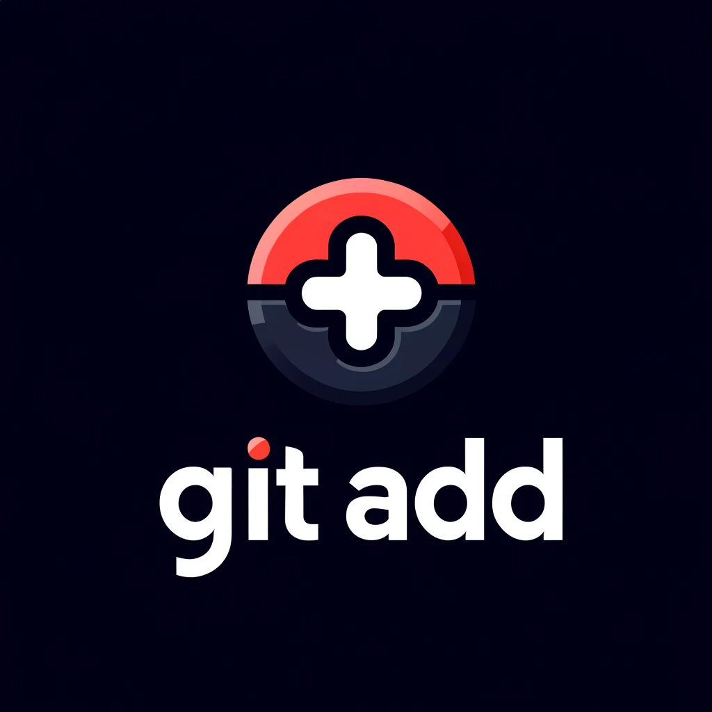

Git
Wiki
Inicio
Blog
Contacto
git init
git add
git commit
git push
git pull
git clone
git merge
git branch
¡Encuentra tu comando Git!
Explora la documentación y aprende a utilizar Git de manera efectiva.
TODOS
git add
git commit
git push
git pull
git clone
git merge
git status
git fork
git branch -a
git branch -d
git fetch
git checkout -t
git checkout -b
git rebase
git reset
git revert
Cómo inicializar un repositorio con git init
30 mayo 2024 - 9:00 am
git init
Leer más

Cómo agregar archivos al índice con git add
30 mayo 2024 - 9:00 am
git add
leer más
Cómo confirmar cambios con git commit
30 mayo 2024 - 9:00 am
git commit
leer más
Cómo subir cambios al repositorio remoto con git push
30 mayo 2024 - 9:00 am
git push
leer más
Cómo obtener y fusionar cambios del repositorio remoto con git pull
30 mayo 2024 - 9:00 am
git pull
leer más
Cómo clonar un repositorio con git clone
30 mayo 2024 - 9:00 am
git clone
leer más
Cómo fusionar ramas con git merge
30 mayo 2024 - 9:00 am
git merge
leer más